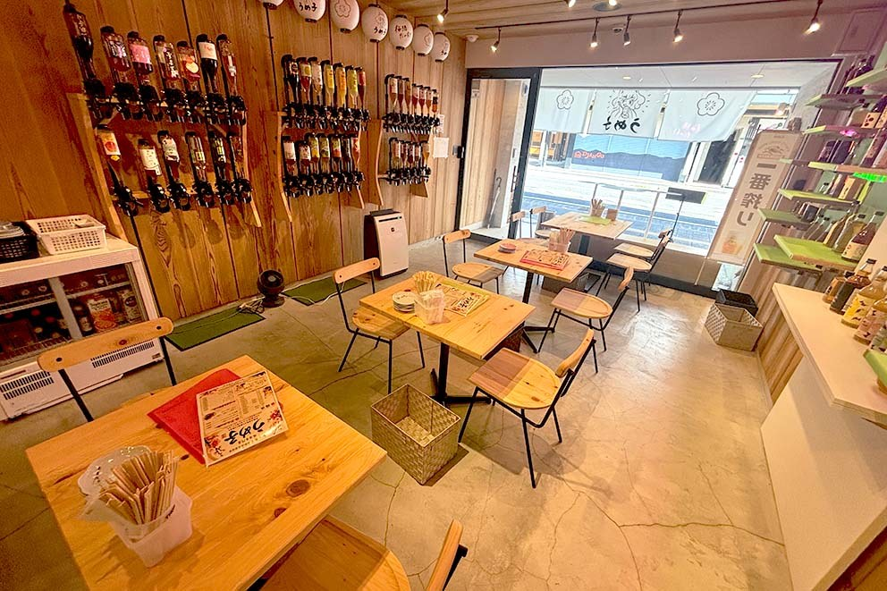
| 営業時間 | 15:00〜23:00 |
|---|---|
| 定休日 | 木曜、第1・第3水曜 |
| 住所 | 和歌山県田辺市湊14-6 |
| 予約 | 予約不要 — ☎ 0739-22-2180 |
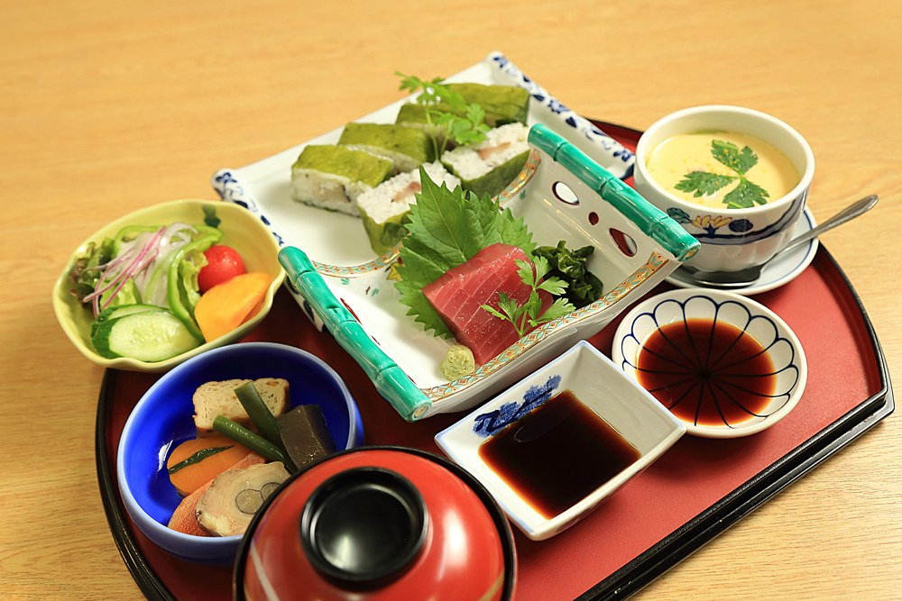
| 営業時間 | 昼 10:00〜15:00(L.O.14:40)／夜 17:00〜21:00(L.O.20:30) |
|---|---|
| 定休日 | 月曜 |
| 住所 | 和歌山県田辺市湊18-12 |
| 予約 | 予約可 — ☎ 0739-22-0834 |
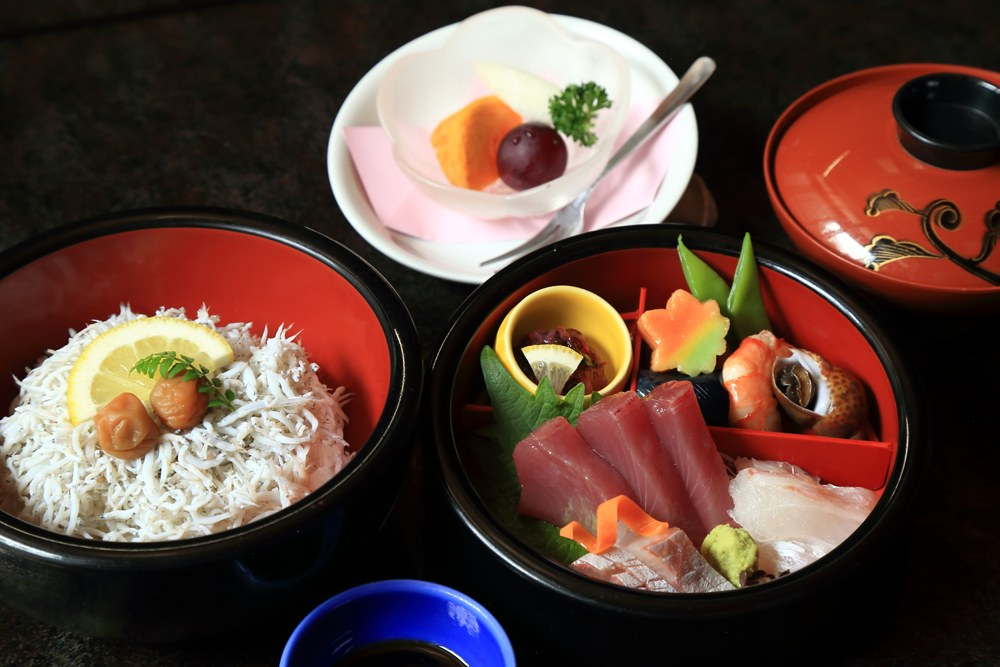
| 営業時間 | 昼 11:00〜14:00(L.O.13:45)／夜 17:00〜20:00(L.O.19:45) |
|---|---|
| 定休日 | 不定休（店のInstagramで告知） |
| 住所 | 和歌山県田辺市湊12-39 |
| 予約 | 予約推奨 — ☎ 0739-22-3960 ／ 公式サイト |
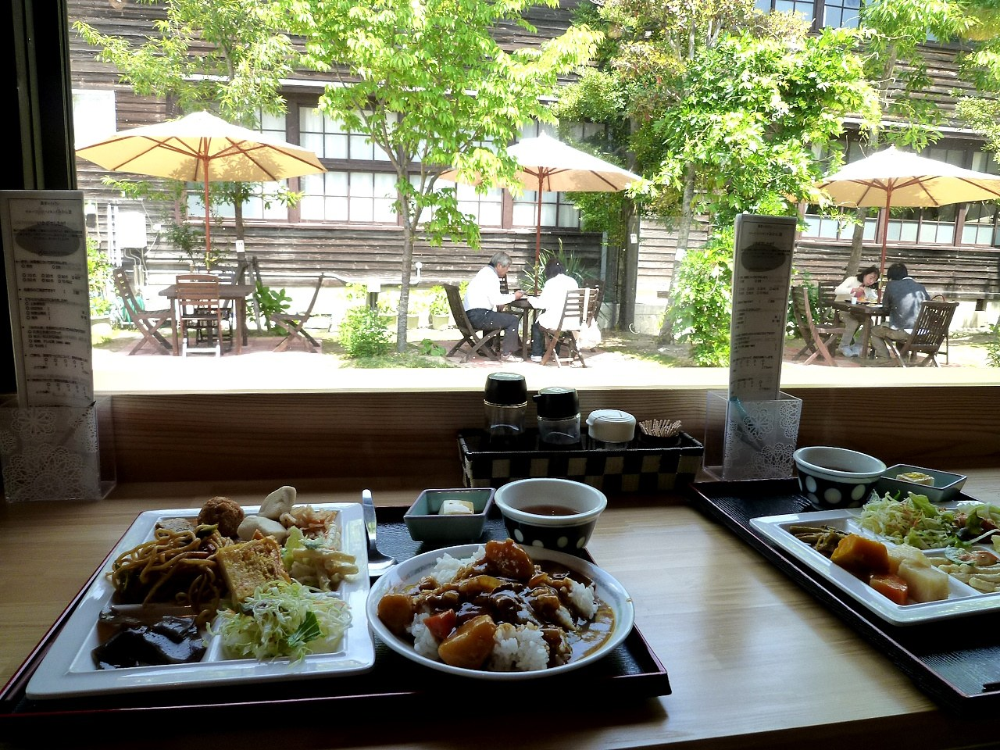
| 営業時間 | ランチバイキングのみ（時間は要確認・0739-35-1199） |
|---|---|
| 定休日 | 要確認（0739-35-1199） |
| 住所 | 和歌山県田辺市上秋津4558-8 |
| 予約 | 予約推奨 — ☎ 0739-35-1199 ／ 公式サイト |
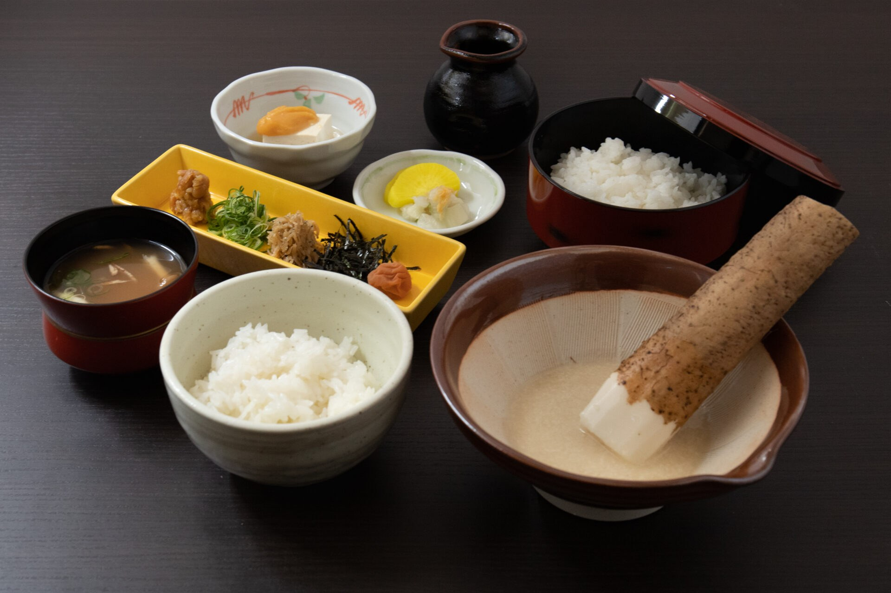
| 営業時間 | とろろや 11:30〜18:30(L.O.18:00)／もちや 土日祝 11:00〜17:00(L.O.16:30) |
|---|---|
| 定休日 | 火曜（祝日の場合は翌日） |
| 住所 | 和歌山県田辺市中辺路町近露1810-1 |
| 予約 | 予約不要 — ☎ 0739-65-0707 ／ 公式サイト |
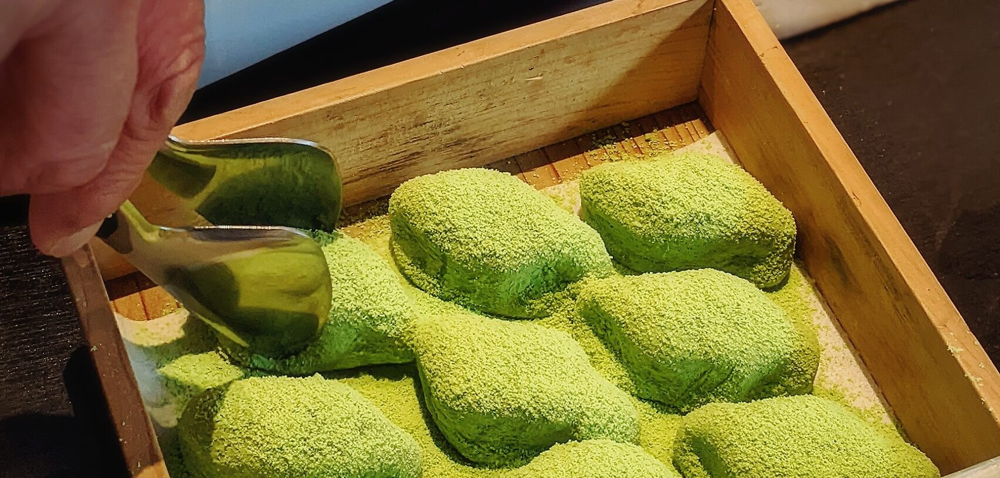
| 営業時間 | 9:00〜16:00 |
|---|---|
| 定休日 | 水曜（夏・秋・GWは無休） |
| 住所 | 和歌山県田辺市本宮町本宮1110 |
| 予約 | 予約不要 — ☎ 0735-42-1648 ／ 公式サイト |
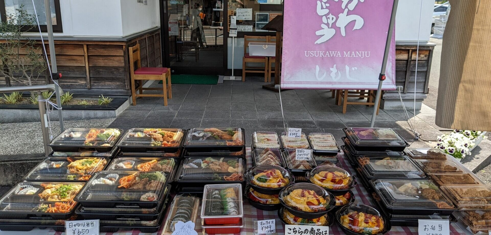
| 営業時間 | 9:00〜14:00（食事は11:00から） |
|---|---|
| 定休日 | 水曜（月1回連休あり） |
| 住所 | 和歌山県田辺市本宮町本宮283-1 |
| 予約 | 予約不要 — ☎ 0735-42-0312 |
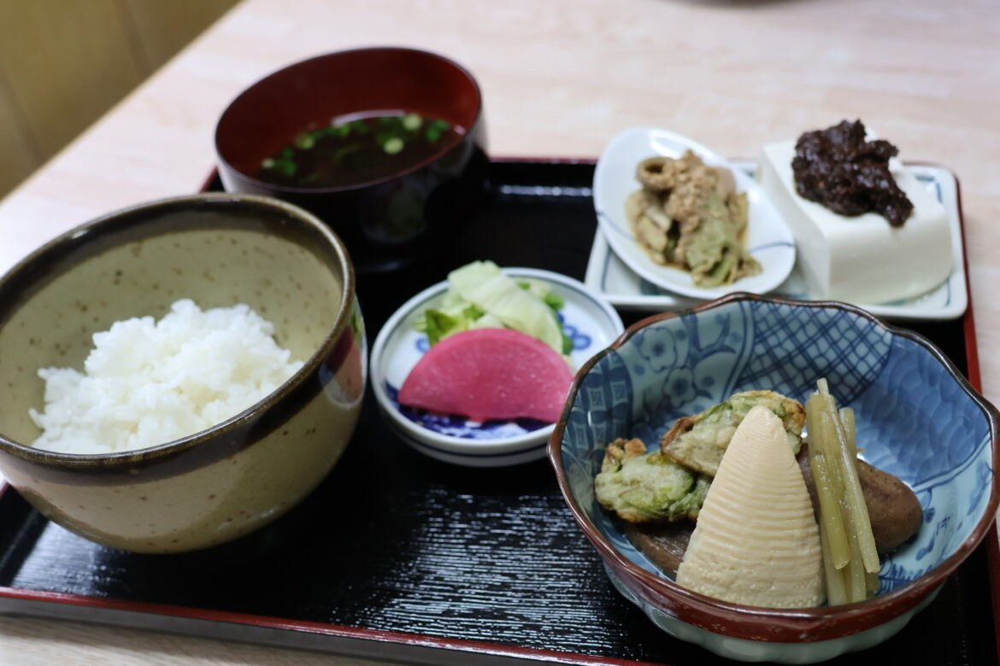
| 営業時間 | 12:00〜16:00 |
|---|---|
| 定休日 | 木曜（祝日の場合は営業） |
| 住所 | 和歌山県田辺市龍神村龍神72-1 |
| 予約 | 予約推奨 — ☎ 0739-79-0367 |
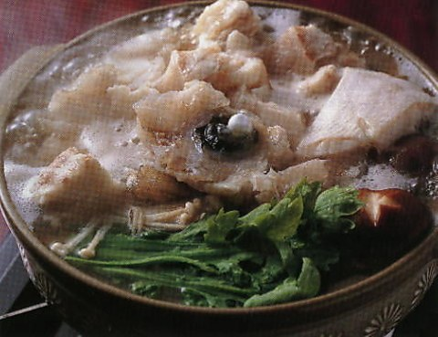
| 営業時間 | 17:00〜21:00（料理L.O.20:00）／事前連絡があれば昼も営業 |
|---|---|
| 定休日 | 不定休（完全予約制・事前予約があれば日曜も営業） |
| 住所 | 和歌山県田辺市上屋敷1-16-5 |
| 予約 | 要予約 — ☎ 0739-22-0886 |
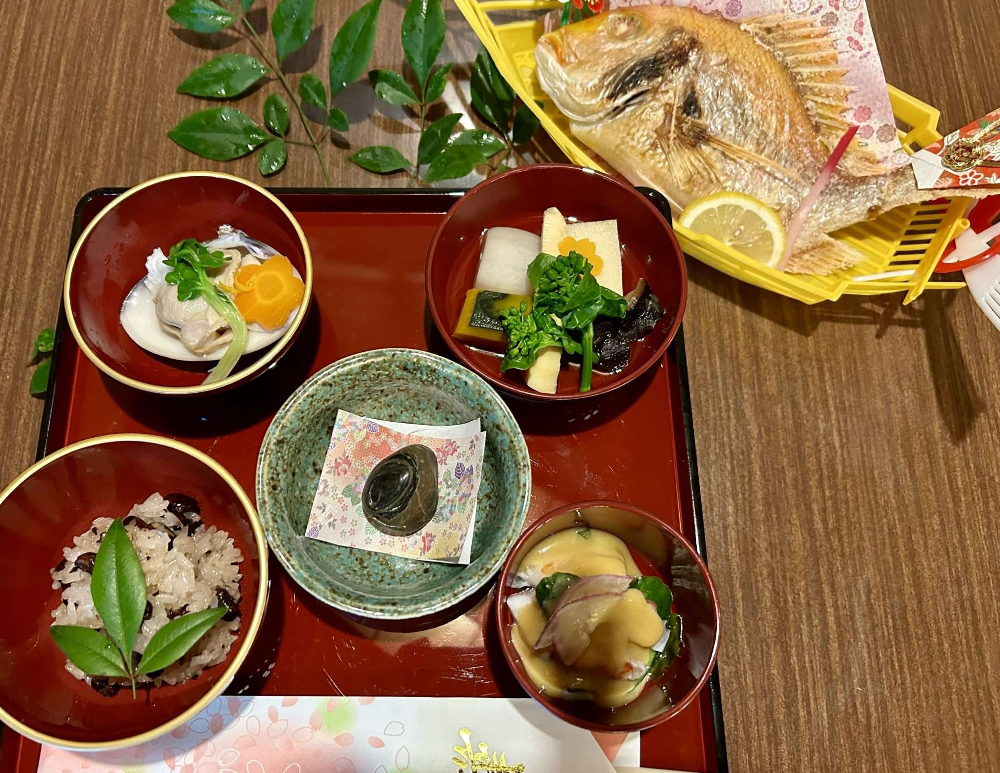
| 営業時間 | 11:00〜21:30（最終入店20:00） |
|---|---|
| 定休日 | 火曜 |
| 住所 | 和歌山県田辺市北新町68番地 |
| 予約 | 予約推奨 — ☎ 0739-22-0234 |
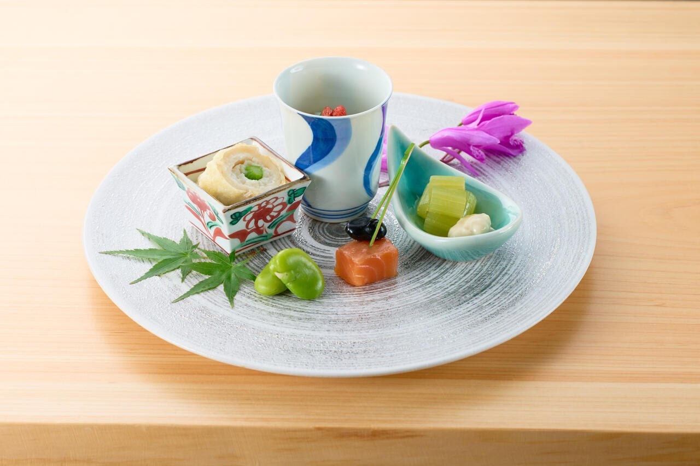
| 営業時間 | 水〜土 11:30〜14:00／17:30〜21:30、月・火・日 17:30〜21:30 |
|---|---|
| 定休日 | 不定休 |
| 住所 | 和歌山県田辺市東山1丁目18-12 1階 |
| 予約 | 要予約 — ☎ 0739-33-2242 |
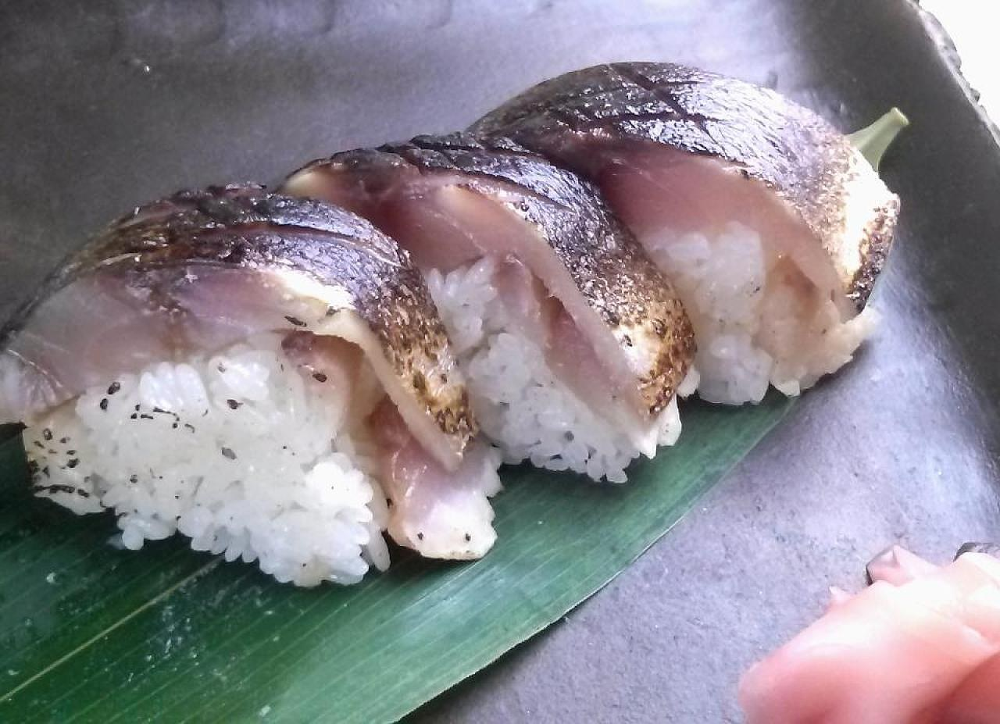
| 営業時間 | 17:30〜23:00（L.O.22:30） |
|---|---|
| 定休日 | 日曜 |
| 住所 | 和歌山県田辺市湊9-15 |
| 予約 | 予約推奨 — ☎ 0739-34-2613 |
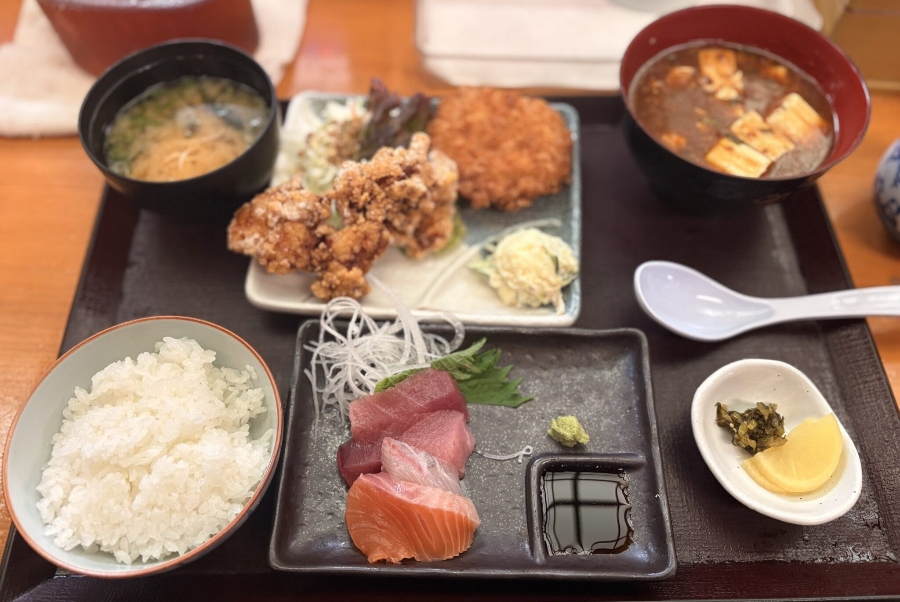
| 営業時間 | 月・火・木〜土・祝 11:00〜14:00／17:00〜22:30、日 17:00〜22:30 |
|---|---|
| 定休日 | 水曜 |
| 住所 | 和歌山県田辺市中万呂92 |
| 予約 | 予約可 — ☎ 0739-22-3568 |
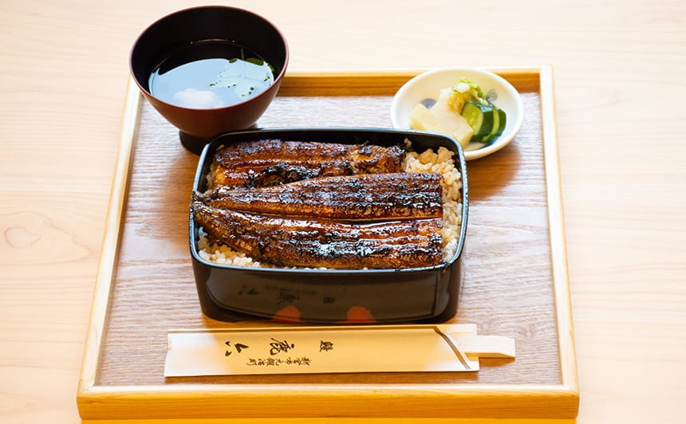
| 営業時間 | 平日 11:00〜14:00／土日祝 11:00〜14:30（L.O.14:00）※当日分の鰻がなくなり次第終了 |
|---|---|
| 定休日 | 月曜（月曜が祝日の場合は翌火曜） |
| 住所 | 和歌山県田辺市本宮町本宮251-1 |
| 予約 | 予約推奨 — ☎ 0735-38-8009 ／ 公式サイト |
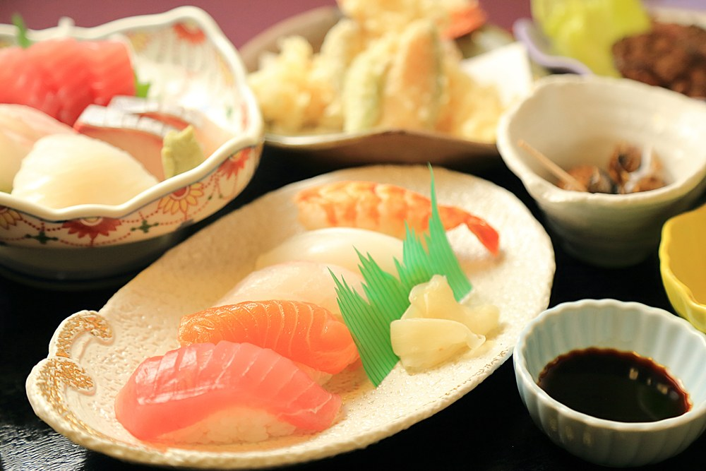
| 営業時間 | 17:00〜翌4:00（ラストオーダー 3:50） |
|---|---|
| 定休日 | 年中無休 |
| 住所 | 和歌山県田辺市湊2番11号 |
| 予約 | 予約可 — ☎ 0739-22-8239 ／ 公式サイト |
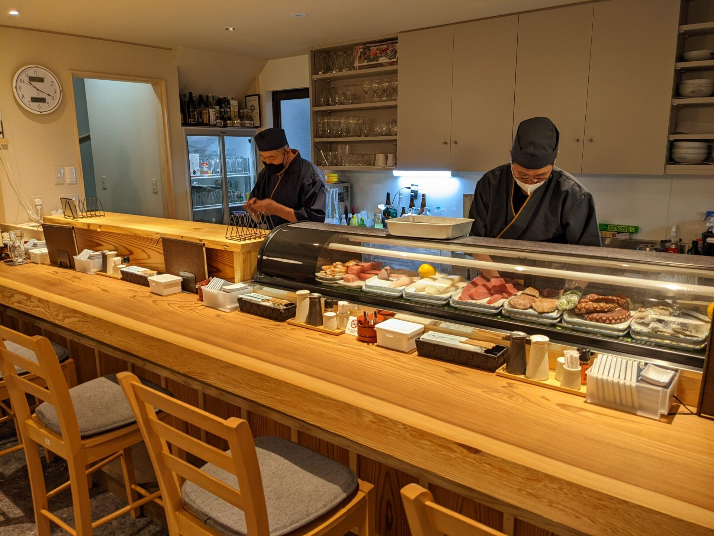
| 営業時間 | 昼 11:00〜14:00（L.O.13:30）／夜 17:00〜21:00（L.O.20:45） |
|---|---|
| 定休日 | 月曜・火曜 |
| 住所 | 和歌山県田辺市本宮町本宮247-4 |
| 予約 | 予約可 — ☎ 0735-30-0288 |
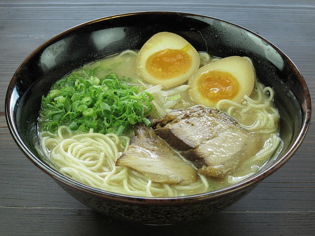
| 営業時間 | 月〜土 11:00〜14:30／17:00〜21:00、日・祝 11:00〜15:00／17:00〜21:00 |
|---|---|
| 定休日 | なし（無休） |
| 住所 | 和歌山県田辺市稲成町186-105 |
| 予約 | 予約不要 — ☎ 0739-20-1364 ／ 公式サイト |
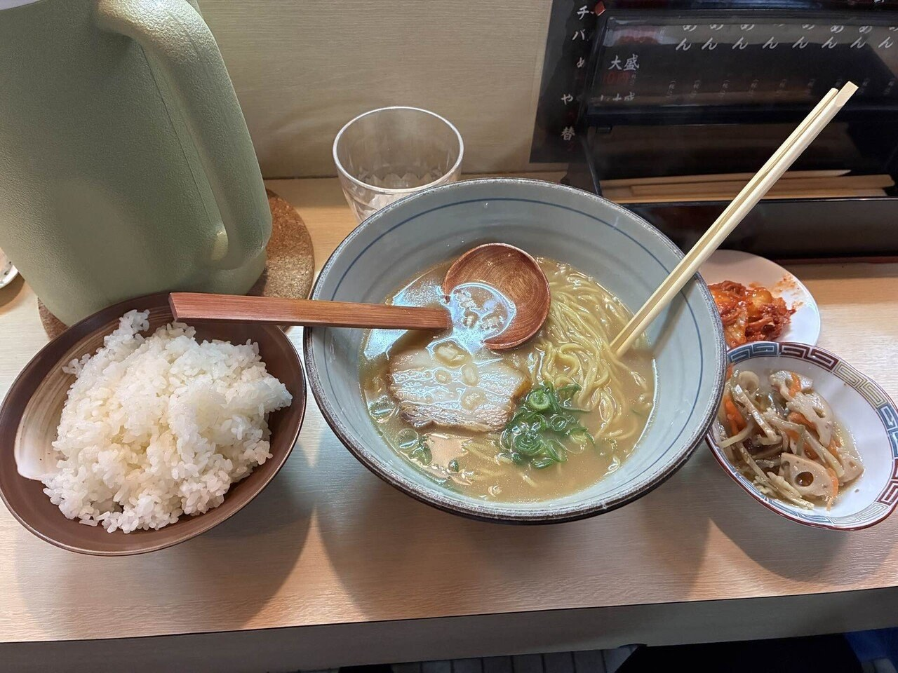
| 営業時間 | 11:00〜14:00／17:30〜21:00 |
|---|---|
| 定休日 | 火曜 |
| 住所 | 和歌山県田辺市秋津町217-14 |
| 予約 | 予約不要 — ☎ 0739-24-5262 |
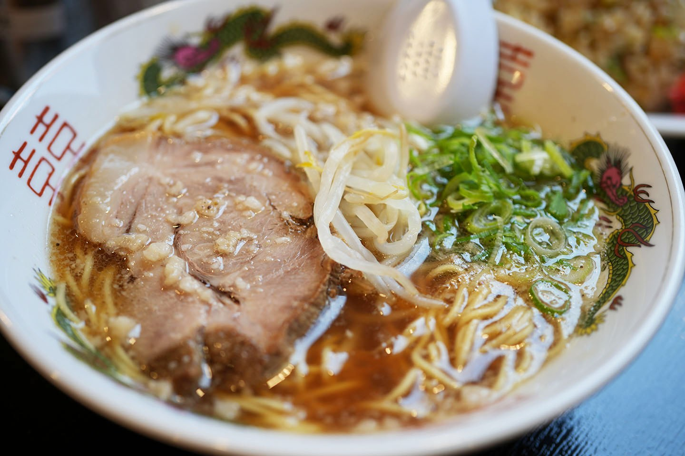
| 営業時間 | 11:30〜13:30／17:00〜20:00（ラストオーダー） |
|---|---|
| 定休日 | 月曜・第3火曜 |
| 住所 | 和歌山県田辺市文里2丁目35-15（COMIC BUSTER 優悦館 和歌山田辺店の敷地内） |
| 予約 | 予約不要 — ☎ 090-4564-3764 |
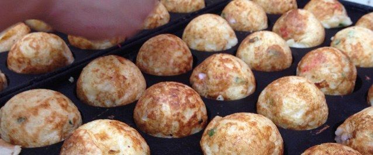
| 営業時間 | 12:00〜19:00（金曜は22:00、土曜は23:00まで／生地がなくなり次第終了） |
|---|---|
| 定休日 | 火曜 |
| 住所 | 和歌山県田辺市高雄1丁目1-28 |
| 予約 | 予約可 — ☎ 090-7766-4199 |
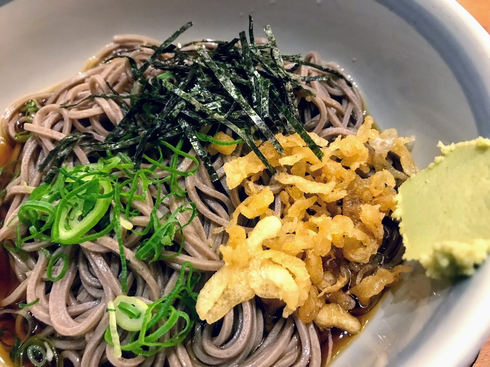
| 営業時間 | 平日 11:00〜15:00／17:30〜21:00、土日祝 11:00〜15:00／17:30〜22:00 |
|---|---|
| 定休日 | 火曜 |
| 住所 | 和歌山県田辺市新庄町2926-16 |
| 予約 | 予約不要 — ☎ 0739-24-5765 |
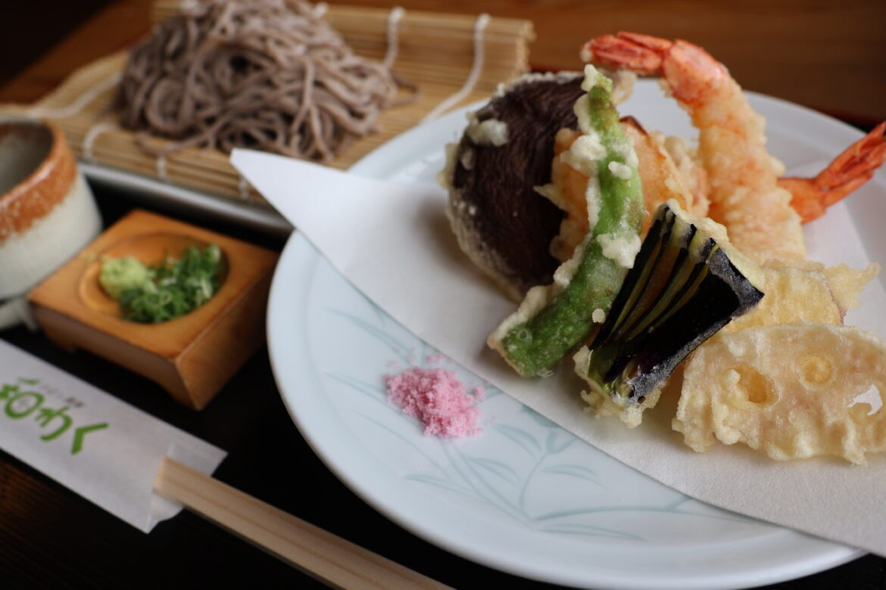
| 営業時間 | 11:00〜15:00（ラストオーダー14:30） |
|---|---|
| 定休日 | 木曜・金曜 |
| 住所 | 和歌山県田辺市龍神村甲斐ノ川443 |
| 予約 | 予約不要 — ☎ 0739-77-0677 ／ 公式サイト |
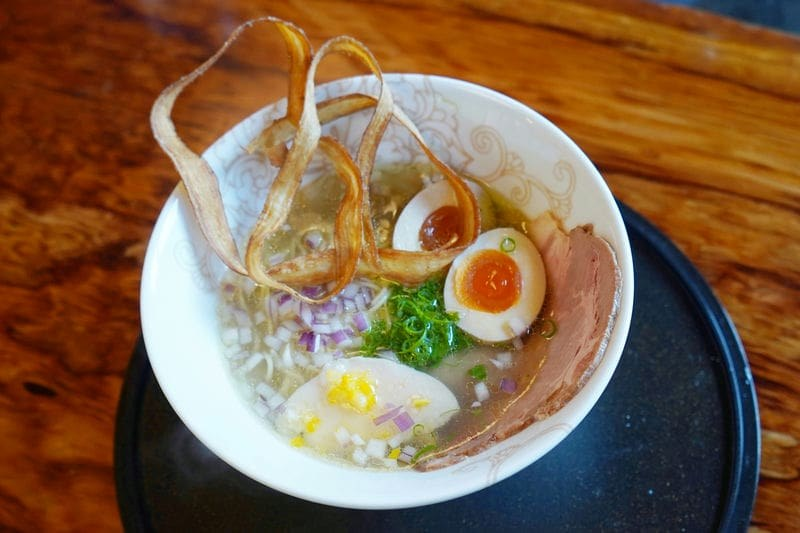
| 営業時間 | 11:00〜14:00／17:30〜20:00（夜営業は金・土・日のみ） |
|---|---|
| 定休日 | 火曜 |
| 住所 | 和歌山県田辺市本宮町請川422-1 |
| 予約 | 予約不要 — ☎ 070-8484-2545 |
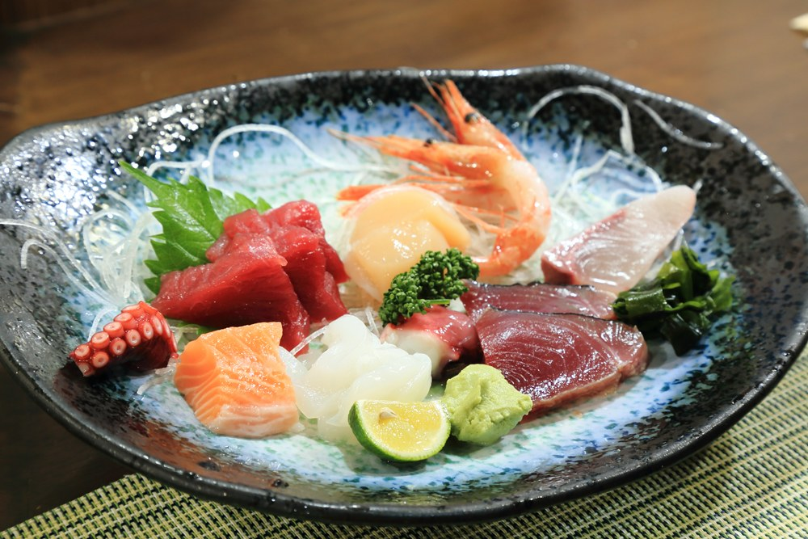
| 営業時間 | 17:00〜22:00(ラストオーダー21:30) |
|---|---|
| 定休日 | 日曜・第1月曜 |
| 住所 | 和歌山県田辺市湊12-45 |
| 予約 | 予約推奨 — ☎ 0739-24-8845 |
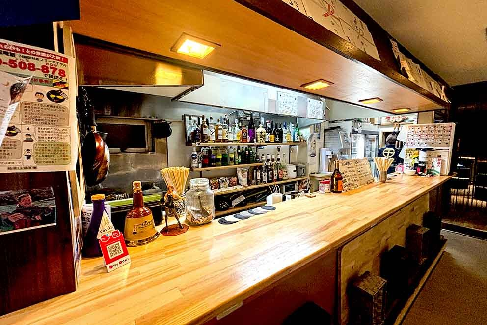
| 営業時間 | 18:00〜26:00 |
|---|---|
| 定休日 | 不定休 |
| 住所 | 和歌山県田辺市湊10-19 |
| 予約 | 予約不要 — ☎ 090-9397-7777 |
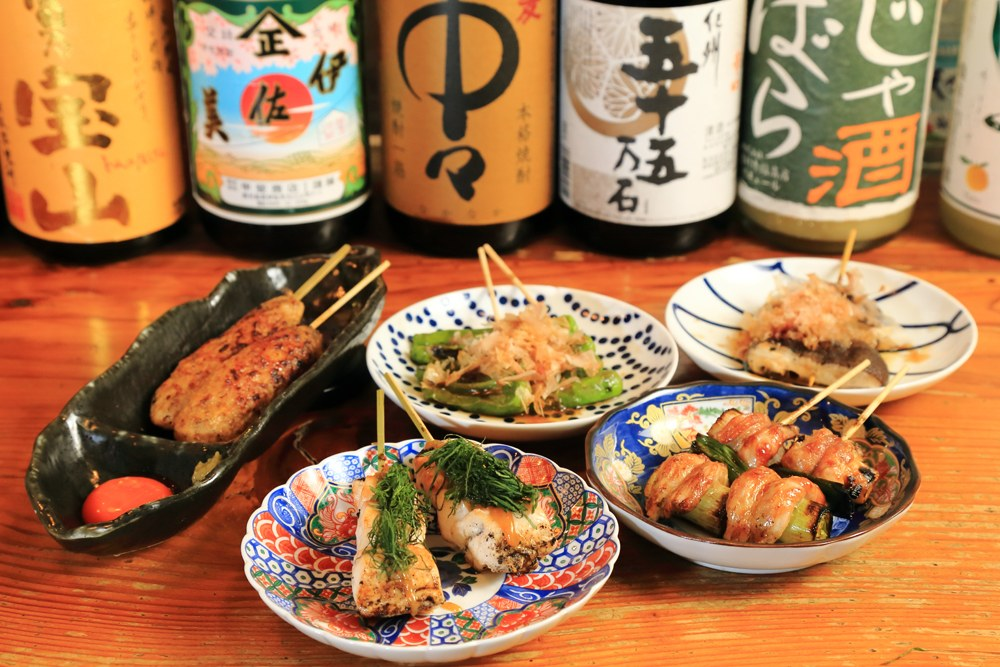
| 営業時間 | 18:00〜23:00(料理ラストオーダー22:00、ドリンク22:30) |
|---|---|
| 定休日 | 日曜 |
| 住所 | 和歌山県田辺市湊6-12 |
| 予約 | 予約推奨 — ☎ 0739-25-9215 |
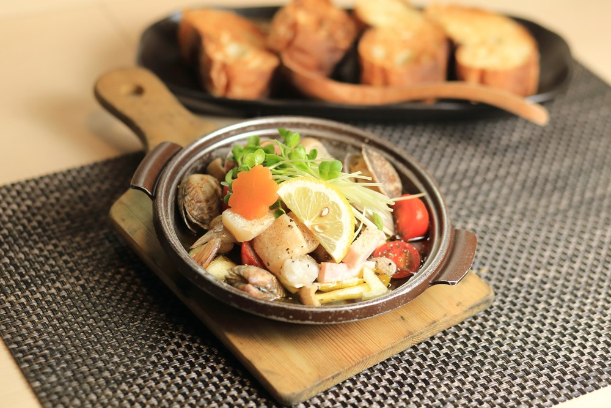
| 営業時間 | 17:30〜23:00(ラストオーダー22:30) |
|---|---|
| 定休日 | 水曜 |
| 住所 | 和歌山県田辺市湊32-3 |
| 予約 | 予約推奨 — ☎ 0739-33-9528 |
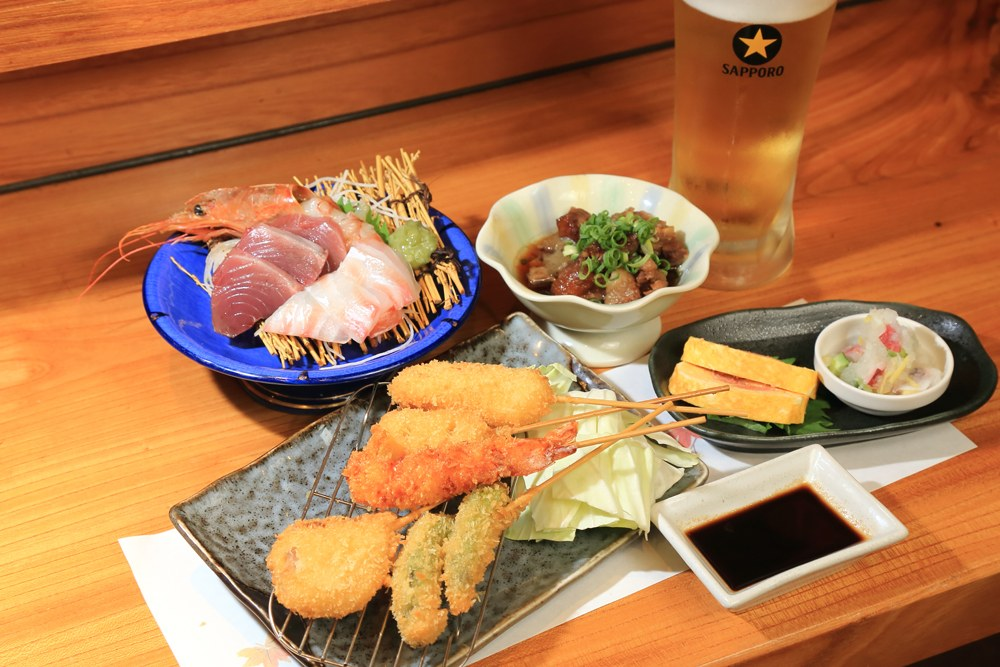
| 営業時間 | 月〜木 17:00〜22:00(ラストオーダー21:30)／金・土 17:00〜25:00(ラストオーダー24:30) |
|---|---|
| 定休日 | 日曜 |
| 住所 | 和歌山県田辺市湊9-7 雨風倶楽部A号 |
| 予約 | 予約推奨 — ☎ 090-9883-0674 |
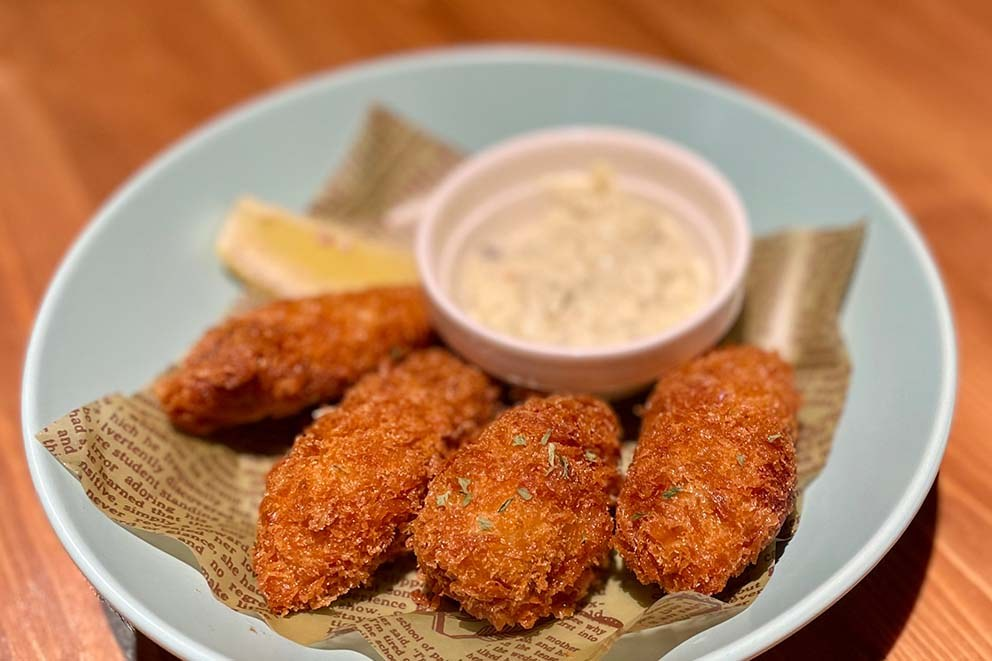
| 営業時間 | 18:00〜23:00(ラストオーダー22:30) |
|---|---|
| 定休日 | 月曜 |
| 住所 | 和歌山県田辺市北新町25 |
| 予約 | 予約可 |
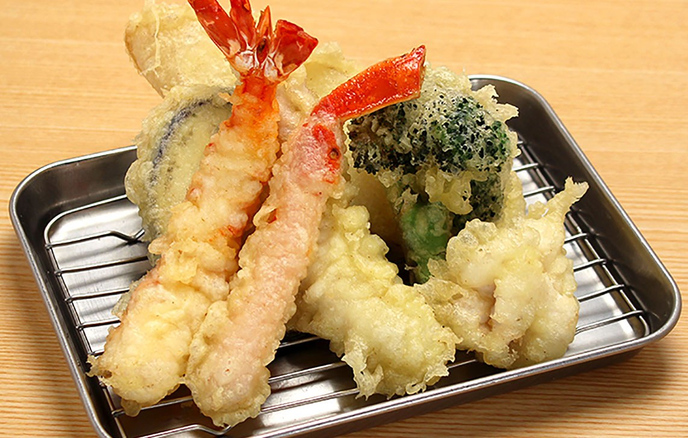
| 営業時間 | 11:00〜15:00(ラストオーダー14:30)／17:00〜21:00(ラストオーダー20:30) ※土日祝は15:30〜16:30休憩 |
|---|---|
| 定休日 | 月曜(祝日の場合は翌日) |
| 住所 | 和歌山県田辺市新庄町2062 |
| 予約 | 不可 — ☎ 0739-81-0100 ／ 公式サイト |
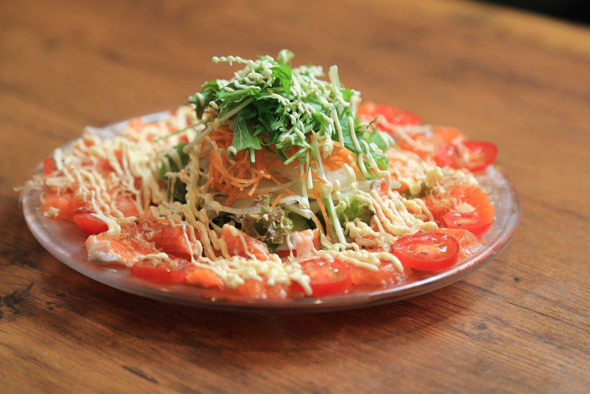
| 営業時間 | 17:00〜23:00（L.O.22:30） |
|---|---|
| 定休日 | 木曜 |
| 住所 | 和歌山県田辺市湊25-16 |
| 予約 | 予約推奨 — ☎ 0739-26-8551 ／ 公式サイト |
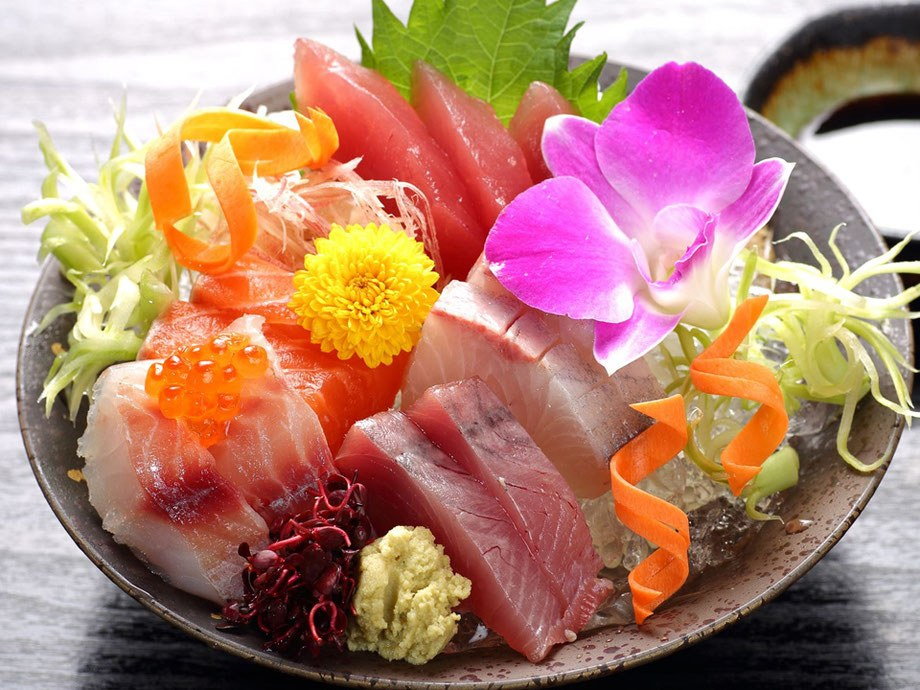
| 営業時間 | 11:30〜13:30／18:00〜22:00 |
|---|---|
| 定休日 | 日曜（祝日の場合は営業） |
| 住所 | 和歌山県田辺市新庄町2744-25 |
| 予約 | 予約推奨 — ☎ 0739-26-2188 ／ 公式サイト |
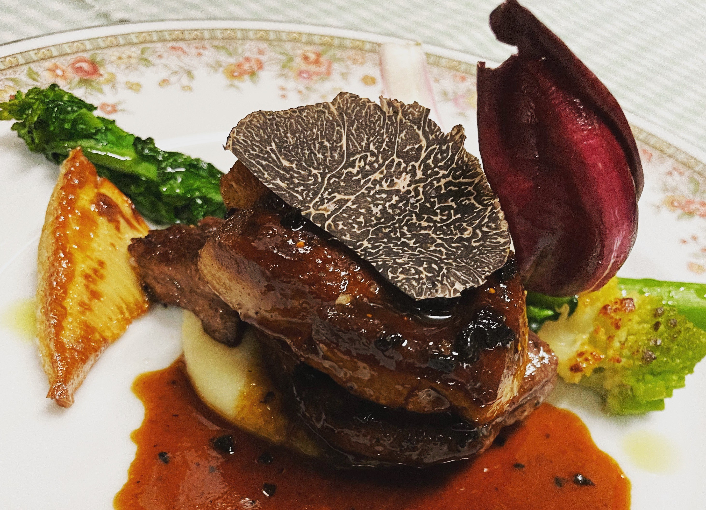
| 営業時間 | 11:30〜14:00／18:00〜22:00（夜営業のみ要予約） |
|---|---|
| 定休日 | 月曜 |
| 住所 | 和歌山県田辺市上の山1-5-12 ハイツエース1F |
| 予約 | 予約推奨 — ☎ 0739-24-1658 ／ 公式サイト |
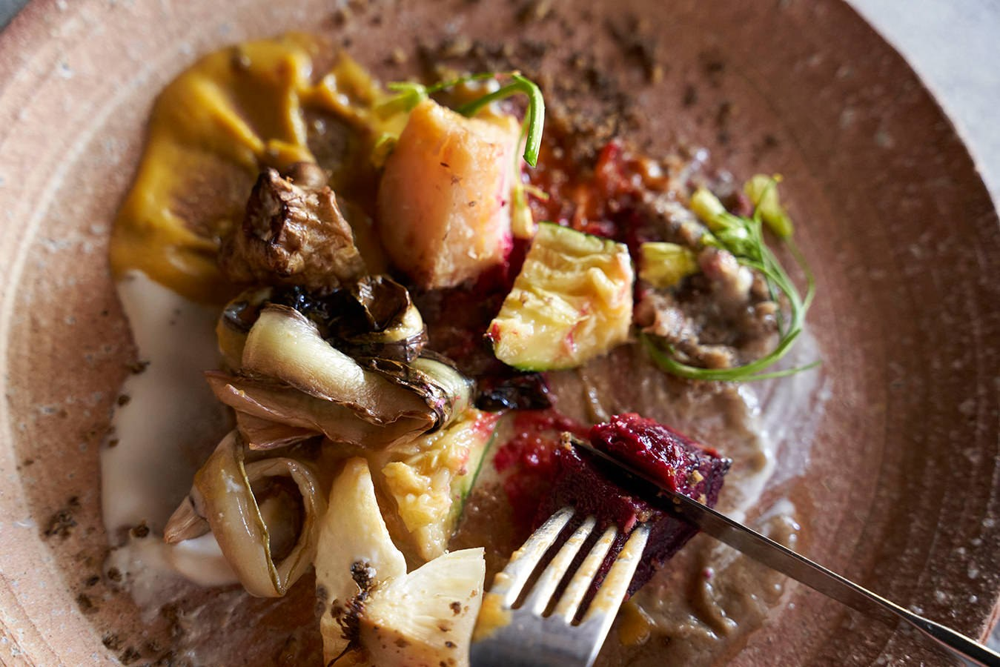
| 営業時間 | 11:30〜15:00（L.O.14:00）／17:30〜23:00（L.O.21:00）※水曜は夜のみ |
|---|---|
| 定休日 | 火曜（水曜はランチ休み） |
| 住所 | 和歌山県田辺市新万8-2 |
| 予約 | 要予約 — ☎ 0739-20-2441 ／ 公式サイト |
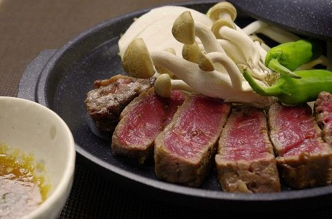
| 営業時間 | 17:30〜22:00（L.O.21:20）／金・土・祝前日は17:30〜23:00（L.O.22:00） |
|---|---|
| 定休日 | 月曜・火曜 |
| 住所 | 和歌山県田辺市湊6-16 スターヒルズ2 1F |
| 予約 | 予約推奨 — ☎ 0739-26-0168 |
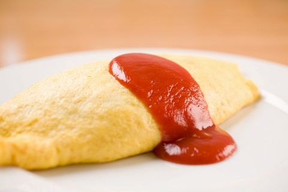
| 営業時間 | 11:00〜22:00（L.O.21:30） |
|---|---|
| 定休日 | 月曜（祝日の場合は翌火曜） |
| 住所 | 和歌山県田辺市文里1-2-10-1 オズビル1F |
| 予約 | 予約可 — ☎ 0739-25-6088 ／ 公式サイト |
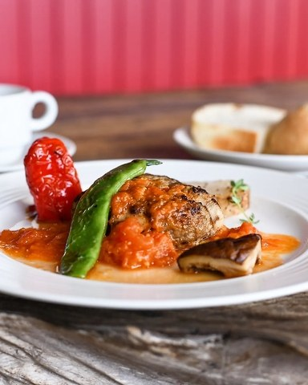
| 営業時間 | 11:00〜16:00（L.O.15:30）／土・日・祝は11:00〜17:00（L.O.16:30） |
|---|---|
| 定休日 | 月曜・火曜（祝日や連休前後は変更あり） |
| 住所 | 和歌山県田辺市中辺路町温川170 |
| 予約 | 予約可 — ☎ 0739-64-0888 |
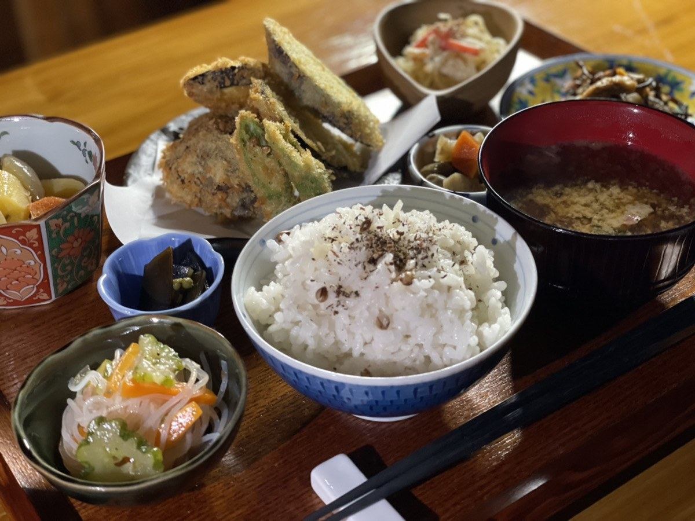
| 営業時間 | 11:00〜17:00（ランチL.O.14:00／カフェL.O.16:00） |
|---|---|
| 定休日 | 月曜・火曜（月曜が祝日の場合は営業） |
| 住所 | 和歌山県田辺市龍神村西258 |
| 予約 | 予約不要 — ☎ 0739-78-2124 ／ 公式サイト |
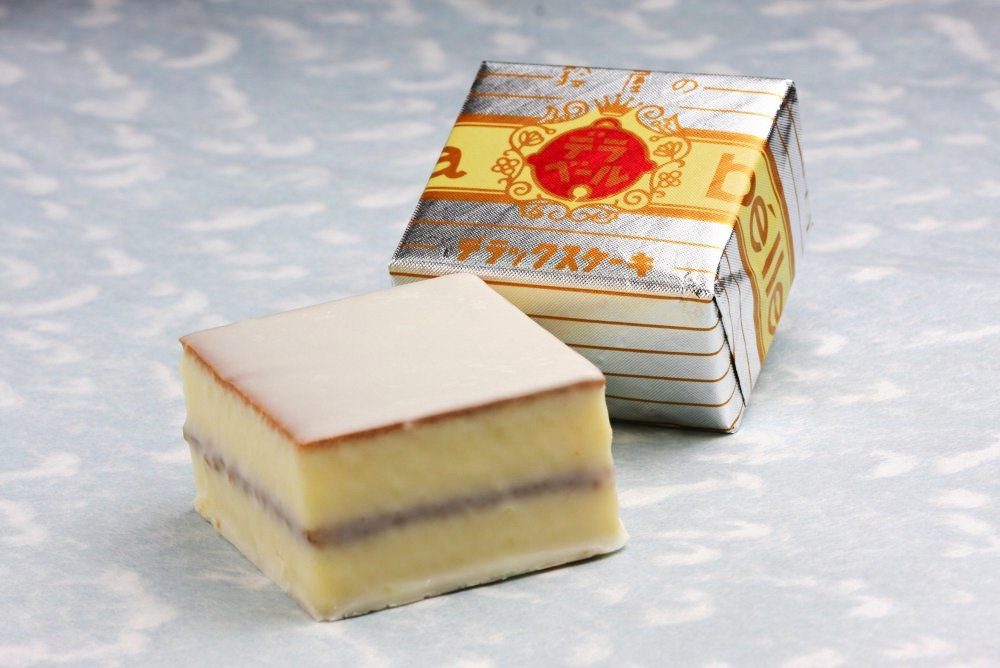
| 営業時間 | 8:00〜18:00（元日のみ10:00〜15:00） |
|---|---|
| 定休日 | なし |
| 住所 | 和歌山県田辺市湊15-11 |
| 予約 | 予約不要 — ☎ 0739-22-0436 ／ 公式サイト |
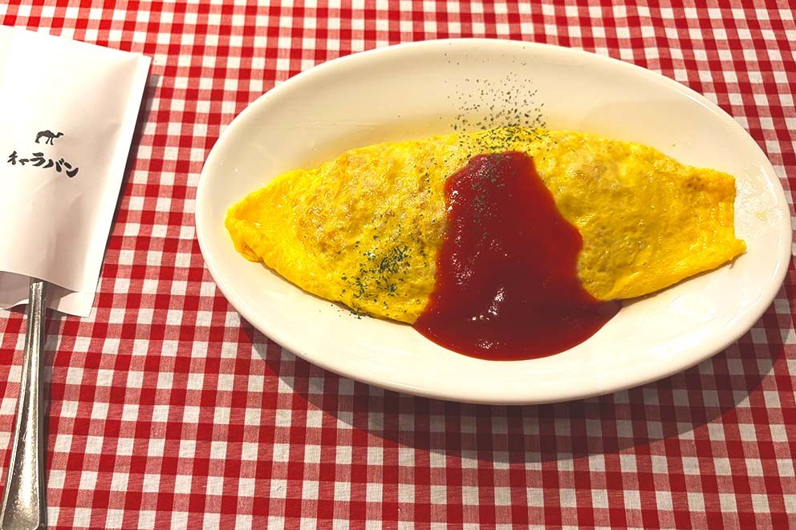
| 営業時間 | 8:00〜17:00 |
|---|---|
| 定休日 | 水曜 |
| 住所 | 和歌山県田辺市湊15-7 |
| 予約 | 予約不要 — 公式サイト |
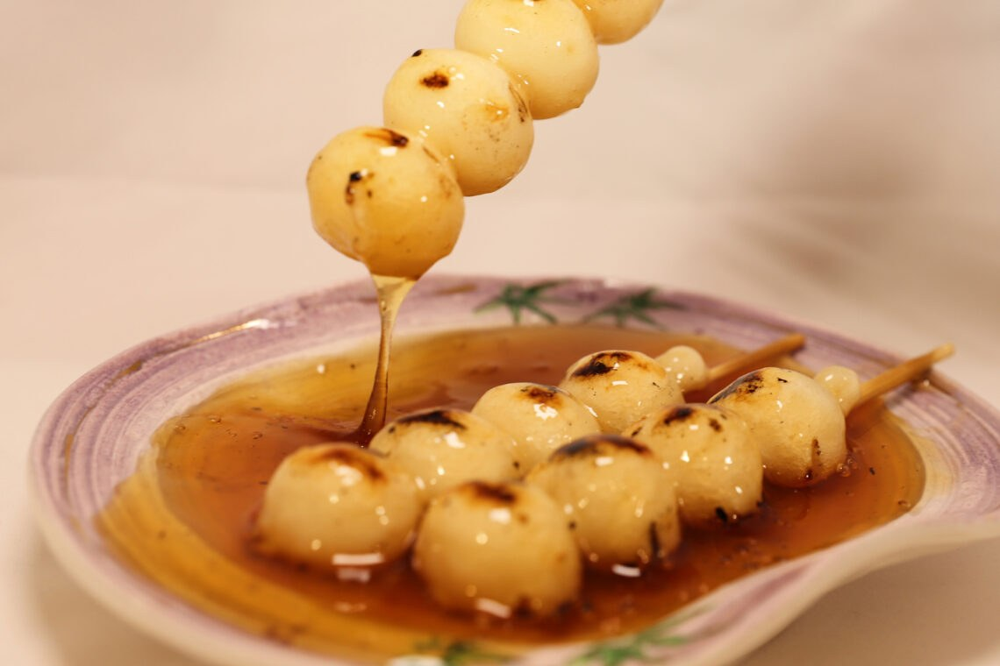
| 営業時間 | 8:30〜18:00（喫茶ラストオーダー16:30） |
|---|---|
| 定休日 | 水曜（火曜不定休） |
| 住所 | 和歌山県田辺市下屋敷町27 |
| 予約 | 予約不要 — ☎ 0739-22-1001 ／ 公式サイト |
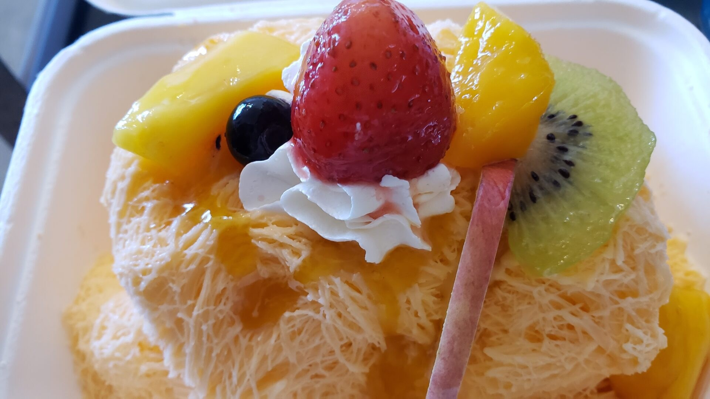
| 営業時間 | 13:00〜17:30（季節により変動。休業日はInstagram @loro.kitchen で告知） |
|---|---|
| 定休日 | 月曜（大雨・台風時は休業） |
| 住所 | 和歌山県田辺市目良19-15（田辺ダイビングサービス敷地内） |
| 予約 | 予約不要 — ☎ 080-5711-3777 ／ 公式サイト |
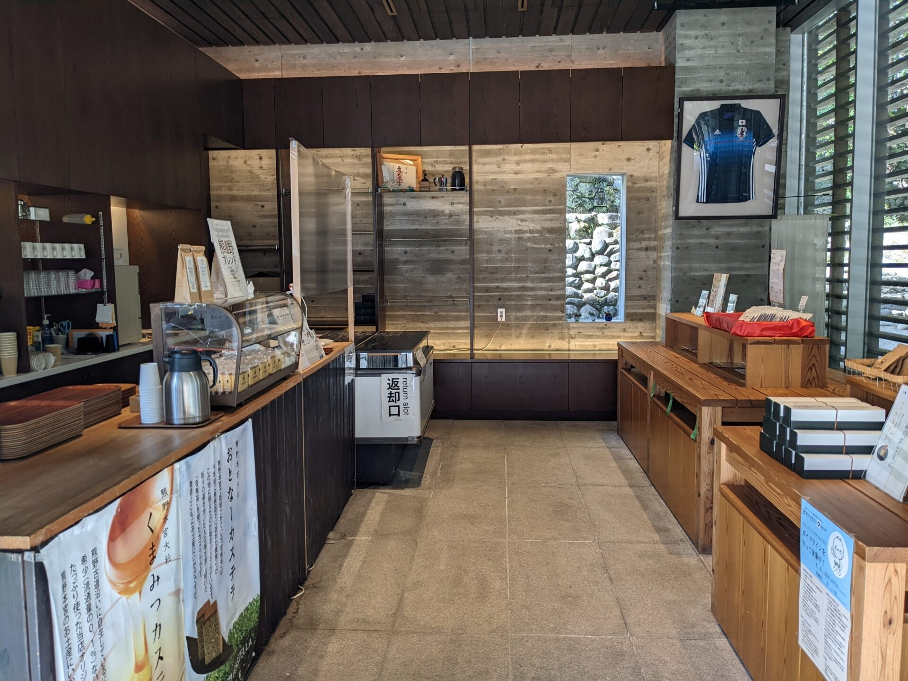
| 営業時間 | 10:00〜16:00（土日祝は9:00開店） |
|---|---|
| 定休日 | 不定休 |
| 住所 | 和歌山県田辺市本宮町本宮195-3（熊野本宮大社 瑞鳳殿内） |
| 予約 | 予約不要 — ☎ 080-9508-1125 |
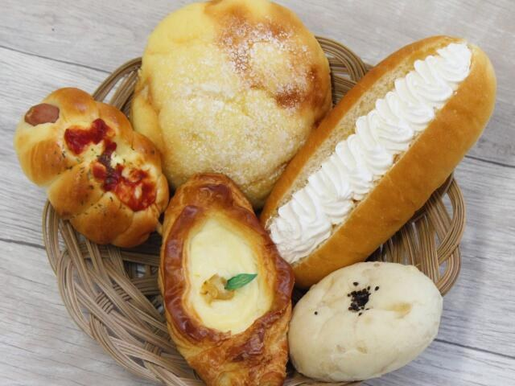
| 営業時間 | 9:00〜18:00 |
|---|---|
| 定休日 | 月曜・火曜 |
| 住所 | 和歌山県田辺市新庄町493-4 |
| 予約 | 予約不要 — ☎ 0739-26-0606 |
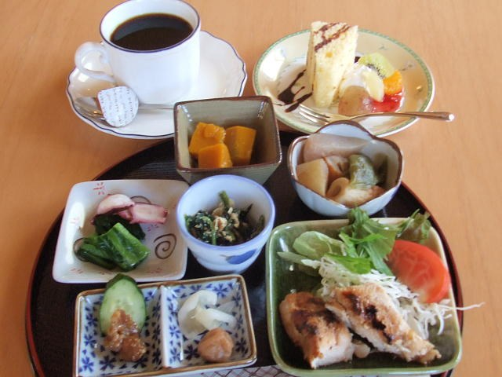
| 営業時間 | 8:00〜16:00（モーニングは〜10:30、ランチは11:30〜14:00） |
|---|---|
| 定休日 | 水曜 |
| 住所 | 和歌山県田辺市上秋津2405-2 |
| 予約 | 予約不要 — ☎ 0739-35-1478 |
本ガイドは個人利用目的で作成。掲載情報は2026年9月時点の調査に基づく。写真出典: 各店の公式サイト・公式SNS、および地域情報サイト等の掲載写真（著作権は各サイト・各撮影者に帰属）。引用元は店ごとにカード内へ明記。